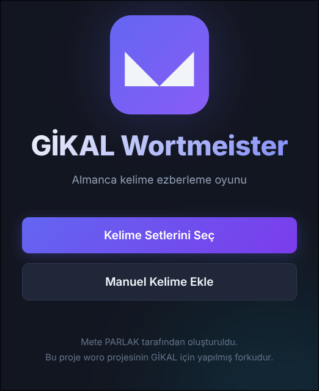

Web-based vocabulary learning application I made for my school, GIKAL(Göztepe İhsan Kurşunoğlu Anadolu Lisesi).
GIKAL Wortmeister is a web based application that supports the German vocabulary memorization process with spaced repetition and level based progression. The project was prepared for the students of Göztepe İhsan Kurşunoğlu Anatolian High School.
It consists of three main components:
Although the infrastructure for this has not been fully prepared yet, once ready users will be able to register and log in to save their progress on the server, continue as a guest and keep their data in the browser, or manually create and study their own word lists.
The user sends input from their browser, the input is carried to the
Rust Axum server and written to users.json. Afterwards, it is
transferred to the WebAssembly module together with static files like
index.html, styles.css, and WASM. Checks are performed using the word
catalog embedded via include_dir! and words normalized
during the process.
main.rs)tower_http::services::ServeDir
lib.rs) (The main event on the Rust side happens
here)
words/ into a catalog
at compile time
get_categories, get_sets,
get_words, get_category_name
check_answernormalized_levenshtein (85%
correct, 65% close threshold).
sessionStorage /
localStorage
/api/auth/save)
All requests use the POST method and require
Content-Type: application/json
All functions exported via wasm-bindgen return a JSON
string
The check_answer function responsible for this task
performs the following checks in order:
trim().to_lowercase()
strip_article(), the remaining
part is compared both raw and normalized
/ character, normalized and similarity
checks are performed for each alternative. If Similarity ≥ 0.85, it is
considered correct (I chose the classic Turkish Education System
method XD)
( in the correct answer, the part before the parentheses
is checked using the same methods
normalized_levenshtein. ≥
0.85 is considered correct, ≥ 0.65 is considered close
Level update:
old_level is less than 5, it increases by 1.
old_level is greater than 1, it decreases
by 1.
progress
Keys are the combination of category and set ID (e.g.
"hazirlik_1"). Each entry:
{
"category": "Hazırlık",
"setName": "Hazırlık / 1. Ünite",
"masteredCount": 42,
"totalCount": 50,
"updatedAt": "2025-01-01T12:00:00.000Z",
"words": [
{ "foreign": "der Hund", "translation": "köpek", "level": 5 },
...
]
}stats Object{
"bestStreak": 15,
"totalCorrect": 120,
"totalAnswered": 145
}
For logged in users, this data is saved both to the server
(/api/auth/save) and to localStorage as a
backup. For guests, since there is no user field to save to, only
localStorage is used
I don't know who would compile this but I thought I'd write it down
wasm-pack build --target web --out-dir static/pkg
This command creates the necessary .wasm and
.js bindings under static/pkg/
cargo build --release --bin wortmeister-serverUSERS_FILE=users.json STATIC_DIR=../static PORT=9090 ./target/release/wortmeister-serverEnvironment variables:
USERS_FILE: User database file (users.json)
STATIC_DIR: Directory containing static files (frontend
etc.) (../static)
PORT: Server port (default: 9090)Access is provided by entering the port in the browser
SHA256(username + ":" + password). Since no salt is used,
bcrypt or argon2 is recommended in production
CorsLayer::permissive()). It is only suitable for use on
an internal network
MIT License
This project was created by Mete PARLAK to make it
easier and somewhat more fun for the students of Göztepe İhsan
Kurşunoğlu Anatolian High School, especially those in the preparatory
class, to prepare for their weekly vocabulary exams. It is a fork of my
Woro project. I am always open to and welcome PRs. For missing or
incorrect word reports, please notify metep788@gmail.com.